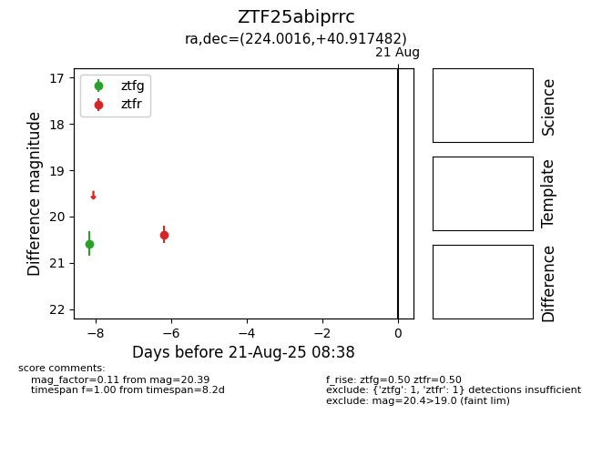

Target ZTF25abiprrc at 2025-08-21 08:38, see:
FINK: fink-portal.org/ZTF25abiprrc
Lasair: lasair-ztf.lsst.ac.uk/objects/ZTF25abiprrc
ALeRCE: alerce.online/object/ZTF25abiprrc
alt names
ZTF25abiprrc (ztf,alerce)
coordinates:
equatorial (ra, dec) = (224.0016,+40.91748)
galactic (l, b) = (69.3212,+60.95749)
photometry
last ztfg=20.58, ztfr=20.39
1 ztfg, 1 ztfr detections
